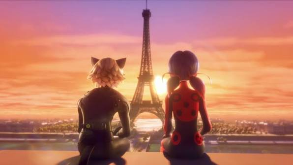

París y una historia que me acompaña.
Ladybug es una serie animada que transcurre principalmente en París y cuenta las aventuras de Marinette, una chica que lleva una doble vida como superheroína. A través de sus episodios se pueden reconocer monumentos, calles y rincones de la capital francesa.
Para mí, no es solamente una serie: es una de las razones por las que empecé a imaginarme caminando por París y conociendo esos lugares que tantas veces vi en la pantalla.
Un sueño que nació viendo una serie.
Ladybug representa ilusión, imaginación, valentía y la emoción de descubrir algo nuevo. Me hizo mirar a París con otros ojos. Por eso, viajar a Francia sería especial: significaría acercarme a un lugar que forma parte de un recuerdo y un sueño personal.
Algún día, ver París con mis propios ojos.
Me encantaría recorrer sus calles, ver la Torre Eiffel, reconocer los escenarios de la serie y guardar mis propias fotografías de esa aventura. Quizás ese día sienta que una parte de mi imaginación se convirtió en realidad.
Conocer los destinos ↗